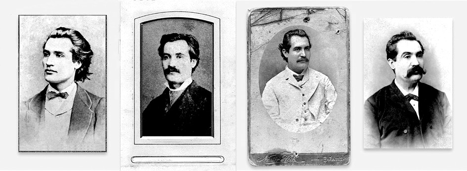

Știut este că în Basarabia doi arhei etnici au lucrat, în adâncuri, pentru ca românitatea dintre Prut și Nistru să nu dispară în pulberea vremurilor: Ștefan cel Mare și Mihai Eminescu. Primul a conservat forța modelului istoric, celălalt – puterea spirituală a limbii, iradiind în cultură. Eminescu nu numai că a însemnat modelul absolut de limbă românească îngăduit de păzitorii din Gulag, ca aparținător de Moldova istorică, dar el a lucrat și la nivelul metalimbajului, al reflecției despre limbă. Dacă Ștefan cel Mare și Sfânt a legitimat moldovenitatea, Eminescu i–a asigurat românitatea profundă, rezolvând tranșant identitatea lingvistică și istorică: Suntem români și punctum. Apoi a venit, tot dinspre el, cugetarea ontologică despre limbă, una dintre cele mai adânci care s–au emis vreodată, confirmată cu asupra de măsură de cel mai important filosof al secolului al XX–lea: Martin Heidegger. „Nu noi suntem stăpânii limbii – spune Eminescu –, ci limba e stăpâna noastră”. Și întrucât afirmația este ontologică, ea are drept corelat adevărul, definit de poet exact în aceiași termeni: „Nu noi suntem stăpânii adevărului, ci adevărul e stăpânul nostru”.
Inevitabil, aceste două fraze scurte, tăiate parcă în diamant, au devenit referențialele fundamentale nu doar ale scriitorilor adevărați, ci și ale filologilor și lingviștilor. Exemplul cel mai elocvent mi se pare a fi acad. Nicolae Corlăteanu, de la a cărui naștere se împlinesc anul acesta 95 de ani și cinci de când a plecat dintre noi. Revista Limba Română, prin grija lui Alexandru Bantoș, și–a făcut o datorie de onoare publicând chiar în primele zile din 2010 volumul Testament. Cred în izbânda limbii române, o antologie de studii, comunicări și memorii. Este, într–adevăr, o carte testamentară, ale cărei principale repere mi se par a fi tocmai cele două cugetări sacre despre adevăr și limbă emise de Eminescu. Niciunul dintre cele două enunțuri nu se găsește reprodus de Nicolae Corlăteanu și totuși duhul lor îi este fir al Ariadnei. Cei care nu l–au avut au rătăcit până la ridicol și grotesc chiar și după căderea Uniunii Sovietice, exemplul radical de înecare în absurd fiind Vasile Stati, autorul dicționarului care a făcut vâlvă caricaturală în anii din urmă.
În mărturia ultimă din volum, Nicolae Corlăteanu îi întâmpină cu următoarele cuvinte pe „vitejii” de după război: „Nouă, basarabenilor și bucovinenilor mai în vârstă, ni s–au scos și urmează să ni se scoată ochii mereu, demonstrându–ni–se în fel și chip carențele. Ne dăm seama că împrejurările istorice ne–au făcut să fim poate departe de ceea ce ar fi trebuit să fim. Nu totdeauna e vina noastră că ne aflăm unde suntem. Am fost lăsați în voia sorții în acel an 1940, fără ajutorul efectiv al celor ce ne sunt frați. Acum unii încearcă să ne judece, să ne osândească nemilos. Aceasta nu poate fi considerată decât o judecată nedemnă a unor viteji care apar după o luptă grea, pe care au dus–o pe viață și pe moarte basarabenii și bucovinenii de nord pentru a supraviețui”. (Mai departe, liniște, liniște…, p. 217).
Numai printr–o contextualizare istorică putem rămâne în matca adevărului. Iar dacă aruncăm privirea dincolo de 1918, vom constata că Basarabia a fost ruptă de istoria firească a românității timp de 106 ani, ca să nu mai vorbim de vânzarea Bucovinei la 1775 către Imperiul Habsburgic.
În textele din Testament, călătoria de peste 180 de ani prin labirintul țarist și sovietic, exceptând cele două decenii interbelice și cei vreo cinci ani de libertate cvasideplină de după 1989, apare fragmentar, dar elocvent spusă, pe parcursul întregului volum. În asemenea condiții, ceea ce a făcut „generația patruzecistă” a lui Nicolae Corlăteanu poate fi rezumată cu dictonul latin, invocat de autor la împlinirea a 80 de ani: Fecit quod potui, faciant meliora potentes („Am făcut tot ce am putut, cine poate – facă mai bine”).
Începutul „testamentului” nu putea pleca decât din vizionarul catren al lui Ienăchiță Văcărescu: Las vouă moștenire…, titlu din 2005, publicat în revista Limba Română: „Țineți minte! – v–o spun în calitate de încercat drumeț pe întortocheatele căi ale basarabenilor – limba română este numele corect și adevărat al limbii noastre și ea trebuie să ne unească, să devină un izvor de bucurii pentru contemporani și pentru cei ce vor veni după noi”. (p. 16). Falsul bilingvism moldo–rus adusese așa–zisa „limbă moldovenească” la un „ghiveci lingvistic” monstruos, pernicios nu doar pentru limba română: „Asemenea vorbire macaronică circula pe vremea ocupației austriece și în Bucovina, când amestecul lingvistic includea germana”. (p. 21). Nicolae Corlăteanu dă exemplele de rigoare atât din „ghiveciul lingvistic” româno–german, cât și din cel „moldo–rus”: „Ein popă ging odată mit o iapă zum căpăstru”; „Asta–i după potrebnosti” etc., comparându–le cu caraghioșâcurile franco–moldave din limbajul Chiriței lui Alecsandri: „fleurs de coucou” etc.
Aberațiile de acest soi, cu pretenția doctrinară că pot duce la crearea unei limbi noi, diferită, în cazul nostru, de limba română, pornesc – remarcă savantul – dintr–o gravă confuzie a punctelor de vedere, a nivelurilor de realitate, cum ar spune filosoful basarabean Ștefan Lupașcu, din lipsa de distincție saussuriană langue/parole, în ultimă instanță, dintre limba literară și cea vorbită. Ideologii staliniști din R.S.S. Moldovenească au refuzat draconic distincția, chiar dacă mari filologi și lingviști sovietici au dat dreptate apărătorilor adevărului despre limbă. Nicolae Corlăteanu îi menționează adesea, cu recunoștință, pe Vl. F. Șișmariov, V.V. Vinogradov, D.E. Mihalci, R.A. Budagov și pe alții. Recurge și la disocierea lui Edmondo de Amicis, a lui Bernard Shaw, a lui Pușkin, care spunea: „A scrie numai cu mijloacele limbii vorbite înseamnă a nu ști limba”. Or, plăsmuitorii „limbii moldovenești”, refuzând să cunoască limba literară, au crezut că pot să creeze din graiul moldovenesc o altă limbă, lucru imposibil, fiindcă limba este stăpâna noastră. Oricine gândește că noi suntem stăpânii limbii ajunge inevitabil la oribile struțo–cămile. Limba vorbită se supune unei eterogenități sans rivages, riscând, izolată de matricea unificatoare, să involueze canceros. Această primejdie a planat cu deosebire asupra graiului moldovenesc din Basarabia, dată fiind izolarea lui de limba literară timp de peste un secol. Asemenea întreruperi mutilatoare sunt sesizate și analizate cu luciditate de către Nicolae Corlăteanu. Dacă nu există un echilibru dinamic între principiul unificator, supradialectal, al limbii literare și principiul diversificator al limbii vorbite, primejdia este greu de evaluat pentru destinul unui idiom. Ajungem, inevitabil, la argumentul ontologic din gândirea lui Ștefan Lupașcu, antiteza dintre omogen și eterogen, care în starea T (a terțului ascuns), specifică nivelului spiritual al realității, se află în semiactualizare și în semipotențializare, orice ruptură de echilibru având consecințe distrugătoare. Eminescu le numea antiteze eșuate sau monstruoase. Eterogenitatea dialectelor, subdialectelor și a graiurilor dă bogăția unei limbi, care bogăție este pusă în valoare numai de armonizarea lor prin rigorile unificatoare ale limbii literare. Lăsate „slobode”, graiurile se pot autosuprima prin ruperea de arheul limbii. Nicolae Corlăteanu aduce în sprijin o afirmație a lui I.D. Ceban: „Doamne ferește dacă această limbă (= literară) s–ar fi născut prin uzurpare și s–ar fi numit după vreo regiune oarecare: muntenească, oltenească, ardelenească, bănățeană, bucovineană, moldovenească etc.! Atunci s–ar fi văzut cum joacă dracul într–un picior! Sintagma «limba română» e unificatoare. Ea nu înalță, nu coboară, nu laudă, nu subapreciază pe nimeni, ea creează condiții egale! Și taie o dată pentru totdeauna apa de la moara rătăciților!” (Apud, p. 27). Numai în Basarabia apa de la moara acestui balaur cu multe capete nu a putut fi tăiată, în pofida argumentelor savanților români, ruși și de pe alte meleaguri europene. Și asta fiindcă aici dracul ideologico–politic s–a învârtit cel mai strașnic într–un picior! Piciorul graiului moldovenesc, crezând că piciorul celălalt, al limbii literare poate fi rupt sau măcar cotonogit! Șiretlicul diavolului, remarcă Nicolae Corlăteanu, este inepuizabil. El le–a dat politicienilor moldoveniști ideea de a face un referendum privind denumirea limbii de stat în Basarabia. Erau siguri de reușită în privința glotonimului fixat fraudulos în art. 13 din Constituție, în 1994. Dar cum poți să decizi prin referendum adevărul, se întreabă savantul. Ochiul poporului vede, de milenii, că soarele se învârte în jurul pământului, nu invers, cum a stabilit știința. Poporul vorbește, nu decide asupra limbii, spune savantul (p. 29). Omul, în slăbiciunea lui, se crede stăpân peste adevăr și peste limbă1. Chiar și inteligențe remarcabile pot cădea în capcana aparențelor. Unul dintre cele mai substanțiale studii ale lui Nicolae Corlăteanu tratează un asemenea caz emblematic. Este vorba de Ion Heliade Rădulescu, studiu scris cu prilejul împlinirii a 190 de ani de la nașterea acestui colos al culturii românești și publicat în două numere din 1992, în Revista de lingvistică și știință literară.

Nicolae Corlăteanu adoptă opinia lui G. Călinescu, în aprecierea că Heliade este cea de a doua uriașă personalitate a culturii românești de după Dimitrie Cantemir. Este, de fapt, și părerea lui Eminescu. Dar, savantul de la Chișinău își pune, în subtext, întrebarea de ce, în pofida anvergurii sale, Heliade nu a devenit și personalitatea eponimă a limbii și culturii românești precum Eminescu. O întrebare la care a dat răspuns sociologul Ilie Bădescu, într–o carte intitulată Timp și cultură (1988). Nicolae Corlăteanu concentrează răspunsul în argumentul eminescian privitor la adevărul limbii. El distinge două etape contradictorii în evoluția atitudinii lui Heliade față de limbă: cea a Gramaticii românești de la 1828 și cea italienizantă, din ultima parte a vieții. Desigur, distincția aceasta a fost sesizată de mulți comentatori ai operei lui Heliade, însă puțini au făcut–o în spiritul eminescian din fraza: Nu noi suntem stăpânii limbii, ci limba e stăpâna noastră. Scriitorul pașoptist a realizat o remarcabilă sinteză asupra problemelor limbii literare de până la el, deschizând larg porțile pentru filologia și lingvistica următoarelor decenii. A înțeles că vorbim pentru contemporani, iar nu pentru strămoși, că primirea neologismelor trebuie făcută „după geniul și natura limbii noastre”, a grăbit revenirea la alfabetul latin, simplificând, mai întâi semnele chirilice prin reducerea lor de la 43 la 27, adoptând, apoi, scrierea latină, fonetică, în Curierul de ambe sexe; a militat, în spiritul Daciei literare, pentru unitatea lingvistică și spirituală a tuturor provinciilor românești etc. Altfel spus, Heliade a lucrat în spirit eminescian, avant la lettre, ca slujitor al limbii române, iar nu ca stăpân al ei. Era chiar pe deplin conștient de asta, mărturisind: „n–am putere a porunci ca un despot și că m’am supus totdeauna la poruncele și glasul limbei”2. De aceea, C. Negruzzi îl numea, cu admirație, „vindecător” al limbii. Însă după 1845 – 1847, s–a produs o metamorfoză inexplicabilă în gândirea heliadescă, înarmându–se cu trufia de stăpân al limbii, fapt pentru care Eminescu, în pofida marii admirații pentru dânsul, a spus despre el că „stă și azi în fața lumii o enigmă n–esplicată”. Mai mult de atât, în articolele din Timpul va face astfel de aprecieri: „Aproape tot ce–a făcut Ioan Eliad, modestul învățător de la «Sf. Sava», a fost caricat de Heliade Rădulescu. Oricine va scrie o istorie a culturii pe malurile Dunării, va trebui să vadă într–acest singur individ doi oameni cu totul deosebiți: unul modest, îngăduitor, plin de bun simț, celălalt suficient, invidios, trăind în ficțiuni și lipsit de orice bun simț”. (Apud Nicolae Corlăteanu, p. 138). Mai înainte, C. Negruzzi fusese și mai dur, văzându–l din „vindecător” al limbii, „ruinător” al ei, cu atât mai primejdios, cu cât se bucura de o mare autoritate, „privit în vremea lui ca un fel de oracol”.
Ironia face că în Echilibrul între antiteze, același Heliade vorbea despre drama dedublării istoriei românești. Eminescu a văzut bine acest fenomen. El se va prelungi până în zilele noastre, la personalități remarcabile, atât în țară, cât mai ales în Basarabia, cum am demonstrat în cartea mea Basarabia sau drama sfâșierii. Nicolae Corlăteanu a înțeles primejdia și opera lui vine să preîntâmpine maladia și s–o eradicheze. Dincolo de opera științifică propriu–zisă, meritul capital ce i se cuvine recunoscut este tocmai luciditatea morală și filosofică prin care el a menținut „echilibrul între antiteze” în adevărul limbii. E și aici același spirit eminescian. O prejudecată regretabilă e că poetul ar fi fost „xenofob”. În realitate, el n–a urât, chiar la nivelul conviețuirii limbilor, pe nimeni. Imediat după Războiul de Independență, a luat atitudine fermă pentru promovarea, din partea statului român, a unei politici echilibrate, echitabile privitor la etniile din Dobrogea. L–a criticat dur pe tânărul Al. Macedonski, ajuns în administrația din Dobrogea, pentru abuzurile împotriva minorităților. De aici, a demonstrat recent Tudor Nedelcea, s–a declanșat adversitatea lui Macedonski față de Eminescu. În Basarabia, minoritarii, din păcate, s–au trezit stăpâni asupra românilor și asupra limbii române, pe care au prigonit–o și o mai prigonesc. În acest sens, acad. Nicolae Corlăteanu a exprimat ultimul său gând testamentar, respingând lex talionis în raport cu minoritățile, cu disputele inutile și împărtășind atitudinea lui Grigore Nandriș (căruia i–a închinat pagini memorabile), în politica lingvistică. La 15 noiembrie 1918, Grigore Nandriș scria: „Toate naționalitățile vor trăi viață liberă națională potrivit caracterului etnic. Ele se vor putea dezvolta în toată libertatea în cadrul statului național român. Românii nu vor face altora nedreptatea ce li s–a făcut lor”. (Apud, p. 163).
O nedreptate perpetuată, din păcate, în Basarabia, de cei care se cred stăpânii limbii și ai popoarelor.
1 Grăitor este și exemplul legat de împăratul romano–german Sigismund de Luxemburg, la 1414, în timpul Consiliului catolic de la Konstanz (unde s–a hotărât arderea pe rug a lui Jan Hus). Comițând o greșeală de limbă, Placentus l–a corectat. Împăratul i–a replicat: Ego sum rex romanus et supra grammaticam. („Sunt împărat roman și mai presus de gramatică”). Prelatul i–a răspuns că stăpânul–rege nu poate fi stăpân și pe gramatică: Caesar non est supra grammaticos. Cu asemenea argument, Nicolae Corlăteanu acuză Parlamentul de la Chișinău, în cel mai pur spirit eminescian, că s–a erijat în stăpân peste limba română.
2 Ion Heliade Rădulescu, Scrieri lingvistice, ediție, studiu introductiv, note și bibliografie de Ion Popescu–Sireteanu, București, 1973, p. 104.